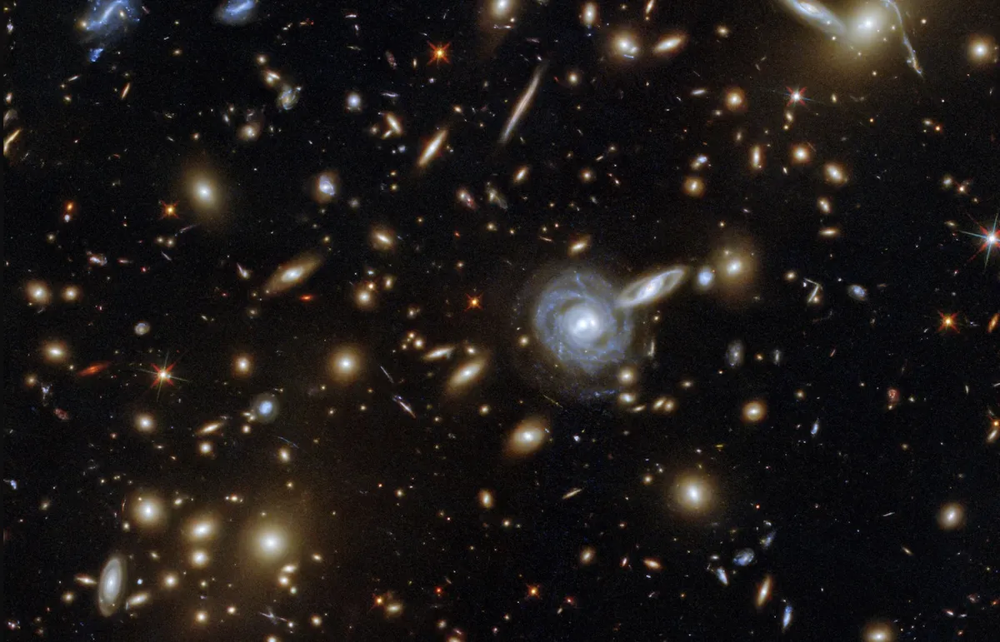

Looking up into the night sky, you might wonder just how many stars are in the universe. It's challenging enough for an amateur astronomer to count the number of naked-eye stars that are visible and, with bigger telescopes, more stars become visible, making counting a lengthy process. So how do astronomers figure out how many stars are in the universe?
The first sticky part is trying to define what "universe" means, said David Kornreich, an assistant professor at Ithaca College in New York State. He was the founder of the "Ask An Astronomer" service at Cornell University.
"I don't know [the answer] because I don't know if the universe is infinitely large or not," he said. The observable universe appears to go back in time by about 13.8 billion years, but beyond what we could see there could be much, much more. Some astronomers also think that we may live in a "multiverse" where there would be other universes like ours contained in some sort of larger entity.
Telescopes may not be able to view all the stars in a galaxy, however. A 2008 estimate by the Sloan Digital Sky Survey (which catalogs all the observable objects in a third of the sky) found about 48 million stars, roughly half of what astronomers expected to see. A star like our own sun may not even show up in such a catalog. So, many astronomers estimate the number of stars in a galaxy based on its mass — which has its own difficulties, since dark matter and galactic rotation must be filtered out before making an estimate
Missions such as the Gaia mission, a European Space Agency space probe that launched in 2013, may provide further answers. Gaia aims to precisely map about 1 billion stars in the Milky Way. It builds on the previous Hipparchus mission, which precisely located 100,000 stars and also mapped 1 million stars to a lesser precision. Data from the mission is due to be released in June 2022, according to ESA.
"Gaia will monitor each of its 1 billion target stars 70 times during a five-year period, precisely charting their positions, distances, movements and changes in brightness," ESA said on its website. "Combined, these measurements will build an unprecedented picture of the structure and evolution of our galaxy. Thanks to missions like these, we are one step closer to providing a more reliable estimate to that question asked so often: 'How many stars are there in the universe?'"